Set Theory#
Preliminaries#
Logic#
In order to develop the theory of sets precisely, we will first need a few concepts from logic.
Proposition#
- Symbolic Expression
- Definition
A sentence that can be judged either true or false.
Truth Table#
TODO
Operations#
TODO
Implication#
- Symbolic Expression

- Definition
A symbolic representation of a conditional (if-then) relationship between two propositions.
This type of proposition can be translated into English in the following ways,
“if p, then q”
“whenever p, then q”
“p implies q”
“q follows from p”
Universal Quantification#
- Symbolic Expression
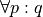
- Definition
A symbolic representation of a universal proposition.
This type of proposition can be translated into English in the following ways,
“for all p, q”
“for every p, q”
“for each p, q”
Existential Quantification#
- Symbolic Expression

- Definition
A symbolic representation of an existential proposition.
This type of proposition can be translated into English in the following ways,
“there exists a p such that q”
“for some p, q”
“there is a p that q”
Definitions#
Domain of Discourse#
- Definition
The domain of discourse is subject matter we are treating.
Elements#
- Symbolic Expression
 (lowercase letters)
(lowercase letters) (lowercase letters with subscripts)
(lowercase letters with subscripts)- Definition
The individuals, or objects, in the domain of discourse; The “things” being counted.
Sets#
- Symbolic Expression
 (upper case letters)
(upper case letters) (uppercase letters with subscripts)
(uppercase letters with subscripts)- Definition
Groups of elements that share a common property.
Note
Sets are sometimes referred to as classes or collections.
Cardinality#
- Symbolic Expression
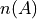
- Definition
The number of distinct elements in a set.
Universal Set#
- Symbolic Expression

- Definition
The universal set S is set of all elements in the domain of discourse.
Null Set#
- Symbolic Expression

- Definition
The unique set which contains nothing, i.e. no elements.
Natural Numbers#
- Symbolic Expresison

- Definition
The set of all counting numbers starting at

Real Numbers#
- Symbolic Expression

- Definition
The set of all decimal numbers, 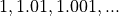
Notation#
List Notation#

In list notation, all of the elements that belong to A are explicitly written between a pair of brackets with commas separating each element.
Quantifier Notation#
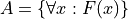
In quantifier notation, all of the elements that belong to A are implicitly written between a pair of brackets with a formula that specifies the conditions for membership.
Quantifier notation is sometimes referred to as set builder notation.
Corollaries#

The number of elements in the null set (the cardinality of the null set) is 0.

Nothing belongs to the null set

Everything belongs to the unverisal set
Venn Diagrams#
A Venn Diagram is a visual representation of sets. The universal set is represent as rectangle and sets are represented as circles within this rectangle. The simplest Venn Diagram is a graphic of a single set A shown against the universal set S,

You will sometimes set Venn Diagrams with the elements of the sets written in, as in the following picture,

Venn Diagrams are useful for visualizing Relations. For this reason, we will see more complex examples of Venn Diagrams in the next section.
Relations#
Subset#
- Symbolic Expression

A is a subset of B if all of A’s elements are contained in B.
To say the same thing in a different way, if the element x belongs to A, then the element x also belongs to B

The relation of subset can be seen in the following Venn Diagram,

This diagram represents the relationship  .
.
Proper Subset#
- Symbolic Expression

A is a subset of B and 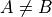. To say the same thing in a different way, A is wholly contained in B.
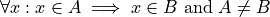
An equivalent way of defining a proper subset is given by,
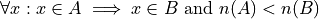
This is an equivalent formulation because saying the cardinality of A is less than the cardinality of B is logically equivalent to saying A is not identical to B.
Equivalence#
- Symbolic Expression

Two sets A and B are equivalent if the number of elements in A is equal to the number of elements B, i.e.,

Equality#
- Symbolic Expression

Two sets A and B are equal if they contain the same elements. In other words, two sets are equal if they are the same set.
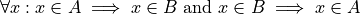
An equivalent way of defining the equality of sets is given by,

In other words, if A is wholly contained in B and B is wholly contained in A, then the only way this can occur is if  .
.
Equality is a stricter condition than equivalence. Two sets that are equal are equivalent, but two sets that equivalent are not necessarily equal. Consider the sets,
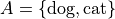
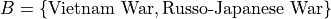
Both of these sets are equivalent because  , but they are not equal. If we add C to the mix,
, but they are not equal. If we add C to the mix,
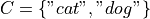
Then not only do we have 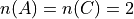, but we also have , since they both contain the same elements.
In order words, from equality we can infer equivalence, but from equivalence, we cannot infer equality.


Operations#
Complement#
- Symbolic Expression


The set containing elements that do not belong to the set A.

The complement can be visualized with the following Venn Diagram,

Tip
The complement of a set corresponds to the English word “not”.
- Example
Let S be the set of animals and let A be the set of dogs. Then
 is the set of animals that are not dogs.
is the set of animals that are not dogs.
Note
The complement is always taken relative to the universal set. In other words, you cannot find the complement if you do not have the universal set.
Example
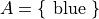
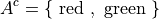

Union#
- Symbolic Expression

The set containing elements that belong to either the set A or the set B.

We have to be careful with Venn Diagrams that represent unions, because the two sets A and B might have elements in common, or they may not have elements in common.
The first case, where the two sets have no elements in common is shown below,

The union would be represented by both circles. Notice the circles do not touch. Sets that have no elements in common are called disjoint.
The second case, where the two sets have elements in common is shown in the next diagram,

The union would be represented by the entire area of both circles. Notice the circles share some elements in this case. Sets that have elements in common, but are not subsets in either direction (i.e. neither nor  ), are called overlapping.
), are called overlapping.
Tip
The union of two sets corresponds to the English “or”.
- Example
Let A be the set of calculators. Let B represent the set of pencils. Then
 represents the set of calculators or pencils.
represents the set of calculators or pencils.
Example


Intersection#
- Symbolic Expression

The set containing elements that to both the set A and the set B.
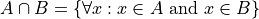
As in the union, there are two cases we need to consider when representing the interesection of two sets with a Venn Diagram. Either the sets have elements in common, or they do not.
The first case, where the two sets have elements in common is shown in the next diagram,
The intersection is represented by where the circles meet. In the case of overlapping sets, this is non-empty,
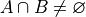
The second case, where the two sets have no elements in common is shown below,
The intersection is represented by where the circles meet. In the case of disjoint sets, the circles do not meet. Thus,

Tip
The intersection of two sets corresponds to the English “and”.
- Example
Let A be the set of United States Senators. Let B the set of people over the age of 70. Then,
 represents the set of people who are both United States Senators and over the age of 70.
represents the set of people who are both United States Senators and over the age of 70.
Example
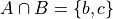
Difference#
TODO
The operation of subtracting a set  from a set
from a set  is equivalent to taking the intersection the sets and
is equivalent to taking the intersection the sets and  ,
,

Theorems#
All of the theorems of Set Theory can be proven in one of two ways:
By drawing a Venn Diagram of the sets in question and working out the relations between them graphically.
Writing example sets in List Notation and then applying the definitions of Operations to both sides of the equation.
Note
Most of the set theorems can be phrased in terms of sets, or in terms of cardinalities. We can do this because all of the following theorems are theorems about equality of sets. Recall that from equality we can infer equivalence,
This will be important when we apply these ideas to Probability. For this reason, we will give two versions of each theorem, when possible. One version will be phrased in terms of sets and the other version will be phrased in terms of cardinalities.
Identity Theorems#
Theorem 1#
- Symbolc Expression
Or equivalently,
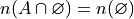
The intersection of any set A with the empty set is the empty set.
Note
Notice the resemblance to zero property of multiplication,
Theorem 2#
- Symbolic Expression

Or equivalently,
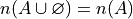
The union of any set A with the empty set is itself.
Note
Notice the resembalnce to the identity property of addition,

Theorem 3#
- Symbolic Expression

Or equivalently,

The intersection of any set A with the universal set is itself.
Note
Notice the resemblance to the identity property of multiplication,
Theorem 4#
- Symbolic Expression

Or equivalently,
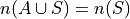
The union of any set A with the universal set is the universal set.
Note
This theorem does not have an analogous algebraic property. This is where set theory starts to diverge from ordinary algebra.
Theorem 5#
- Symbolic Expression

The union of any set A with itself is itself.
Theorem 6#
- Symbolic Expression

The intersection of any set A with itself is itself.
Subset Theorems#
Theorem 1#
- Symbolic Expression
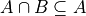
Or equivalently,
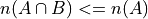
The intersection of A and B is a subset of A.
Theorem 2#
- Symbolic Expression
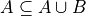
Or equivalently,

A is a subset of the union of A and B.
Theorem 3#
- Symbolic Expression
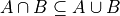
Or equivalently,

The intersection of two sets A and B is a subset of the union of those same two sets.
Theorem 4#
- Symbolic Expression
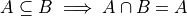
Or equivalently,

If A is a subset of B, then the intersection of A and B is equal to A.
The hypothesis of this theorem, that A is a subset of B, cannot be written simply in terms of cardinalities. To see why, consider the sets,

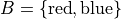

Here we have,

From this and the theorem taken together, we are able to infer the intersection of B and A is B,
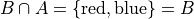
If we try to apply the same logic to C and A, we run into a problem. Namely,

However, we do have,
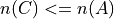
But this doesn’t help us, because from it, we cannot infer,
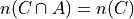
In fact, not only can we not infer it, it’s not true. In this example,

So,
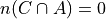
Whereas,

The lesson here is: the relation of “less than or equal to” between cardinalities does not equate to the relation of “subset of” between two sets. While the concepts are related, this theorem illustrates they must regarded as separate ideas.
Theorem 5#

If A is a subset of B, then the union of A and B is equal to B
Theorem 6#
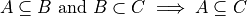
If A is a subset of B and B is a subset of C, then A is a subset of C.
Complement Theorems#
Theorem 1#
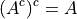
The complement of a set A’s complement is the set a.
Tip
Think of this theorem in terms of “double negative”.
- Example
If a crayon isn’t not red, then it is red.
Example
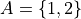
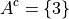


Theorem 2#
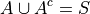
Or equivalently,
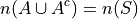
The union of a set A with its complement is the universal set.
Note
This theorem is sometimes known as the law of the excluded middle.
Example
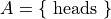


Theorem 3#

The intersection of a set A its complement is the empty set.
Note
This theorem is sometimes known as the law of non-contradiction.
Example
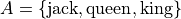


Counting Theorems#
Theorem 1#
- Symbolic Expression
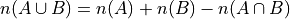
The number of elements in A or B is equal to the number of elements in A plus the number of elements in B, minus the elements A and B have in common.
This is another theorem most easily understood by considering the following venn diagram,
The area encompassed by both circles is the union . The overlap in the circles is intersection .
Consider how we count up elements in A or B. We first count up the elements in A, including the elemetns in the overlap. We then count up the elements in B, which includes the overlap again. In other words, by calculating  , we have counted up the elements in twice. To fix this overcount, we need to subtract the number elements of in . Whence we arrive at the theorem.
, we have counted up the elements in twice. To fix this overcount, we need to subtract the number elements of in . Whence we arrive at the theorem.
Example
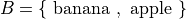
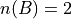
Note, when the elements of A are totaled,
appleis counted once. When the elements of B are totaled, the elementappleis counted again. We have thus doubled-counted this element, which is exactly the intersection
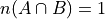
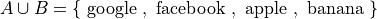
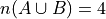


Theorem 2#
- Symbolic Expression
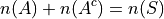
The number of elements in any set A plus the number of elements in its complement is equal to the number of elements in the univeral set.
This theorem follows from the venn diagram of a set with its complement,
It can proved formally as follows,
- Proof
-

By definition,

So, it follows,
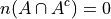

But, as noted, the last term on the righthand side of this equation is
0, so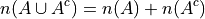
On the other hand, by Complement Theorem 2,
So, it follows,
Putting it altogether,

Aristotle’s Square of Opposition#
The square of opposition is a famous logical device for remembering how different propositions involving sets are related to one another. To be more specific, the square of opposition shows how negation affects sets. Before we show you the square of opposition, let us take a look at the logic behidn it.
In ordinary first-order logic, the negation of proposition simply means negating its truth value. For example, the negation of the proposition,
p = it is raining
Can be found by inserting the word “not”,
~ p = it is not raining
However, when we are talking about sets, it is more complicated, because we must quantify over which elements in the set proposition is true.
Derivation#
Consider the algebraic proposition,
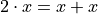
This type of statement is obviously true no matter what we insert for x. Whatever number we plug into the equation, a true statement will always result. Symbolically, we can express this idea with the  symbol,
symbol,
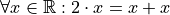
We read this is as, “for all x, doubling x is equal to adding x twice”.
Contrast this against the proposition,

We are not free to plug just any value of x into this equation. Only a particular value of x will satisfy it, i.e. make it true (in this case  ). Anything else we plug into the equation will result in a contradiction, a statement that is obviously not true (try plugging in
). Anything else we plug into the equation will result in a contradiction, a statement that is obviously not true (try plugging in  and see what you get). We can express this idea with the symbol,
and see what you get). We can express this idea with the symbol,

We read this as, “there exists an x such that  ” or “some x satisifies
” or “some x satisifies  .
.
When dealing with sets, we have two types of propositions to consider, universal propositions, denoted by the symbol, and existential propositions, denoted by the symbol.
- Then, in order to understand negation with respect to sets, we must answer to questions:
How do we negate a universal proposition?
How do we negate an existential proposition?
In order to answer these question, we have to break each case into two further cases: the positive case and the negative case.
For universal propositions: In the positive case, we take a universal proposition that asserts something of all elements in a set. In the negative case, we take a universal proposition that denies something of all elements in a set.
For existential propositions: In the positive case, we take an exisential proposition that asserts something of some element in a set. In the negative case, we take an existential proposition that denies something of some element in a set.
Universal Positive Case#
Consider the proposition
All dogs are brown.
In order to show this proposition is false, it would be sufficient to show at least one dog existed that was not brown. For, if all dogs are brown, then it cannot be the case there is one dog that is not brown. Therefore, the negation of this proposition is,
Some dog is not brown.
To express this symbollically, let D represent the set of dogs and let B represent the set of brown things. Then the first proposition can be represented as,
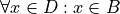
Note
This is equivalent to saying,
In order to negate this, we must show there is some element in D that is not in B. In other words, we switch the to a and negate the proposition being quantified,

Thus, we arrive at the formal definition of the negativion of a universal affirmative proposition,
Universal Negative Case#
Consider the proposition,
Some cars are fast.
In order to negative this we must show all cars are not*fast. It is *not sufficient to show only some cars are not fast, because there may exist cars in the some we have not considered that may yet be fast, which would coincide with the truth of the original proposition. Therefore, the negation of this proposition is,
All cars not fast.
To express this symbollically, let C be the set of all cars and let F be the set of all fast things. Then, the original proposition can be written with the symbol,
To negate this, we switch the to a and negate the quantified proposition,
Thus, we arrive at the formal definition of the negation of a universal negative proposition,

Existential Positive Case#
TODO
Existential Negative Case#
TODO
Square of Opposition#
Finally, we come to the square of opposition, a visual device for remembering everything that has been covered in this section.
The square of opposition is constructed by first drawing a table,
existential |
universal |
|
positive |
||
negative |
In the entries of this table, you draw Venn Diagrams that represent the intersection of the row and column. Putting the results together, we get the following picture,

Notice the diagonals of the picture, the line that connects the top left to the bottom right and the line that connects the top right to the bottom left, form the contradictory pairs of propositions, namely,
universal positive <– contradicts –> existential negative
And,
universal negative <– contradictis –> existential positive